▲ 羊羊克里斯在坎培拉郊區被發現時的樣貌（圖片來源：澳洲國立博物館）
▲ 羊羊克里斯在坎培拉郊區被發現時的樣貌（圖片來源：澳洲國立博物館）
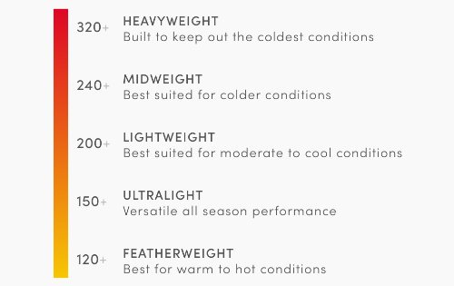
▲ icebreaker 衣物產品的保暖能力均以羊毛磅數來表示，數字越大代表越保暖（圖片來源：icebreaker）
icebreaker 底層衣搭載 BodyfitZONE™ 技術以達到自然溫度調控的效果，能夠將熱量收集在需要的地方，並且在進行高強度運動時釋放出來。設計方面則是以分區管理的概念，在身體容易流汗的部位加入透氣網眼，在達到透氣排汗的效果時，仍然能夠在寒冷的環境中保持體溫，其頸部拉鍊設計也能夠讓使用者更直接地調節體溫。
以 96% 美麗諾羊毛與 4% 萊卡彈性纖維製成的 icebreaker 底層衣，雖然並未 100% 使用美麗諾羊毛，但這 4% 萊卡彈性纖維能夠創造更高的伸展性和活動性。此外，它的拼縫線皆使用三針五線平織法，避免運動時長期摩擦而受傷，且插肩袖構造和腋下襯料也能夠有效提升舒適性與機動性。
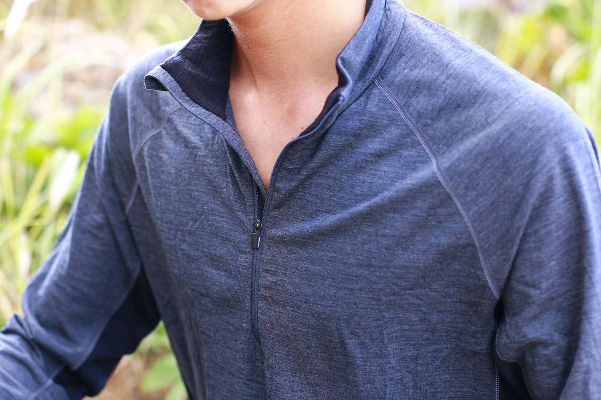
▲ 頸部拉鍊設計讓使用者能夠直接調節體溫
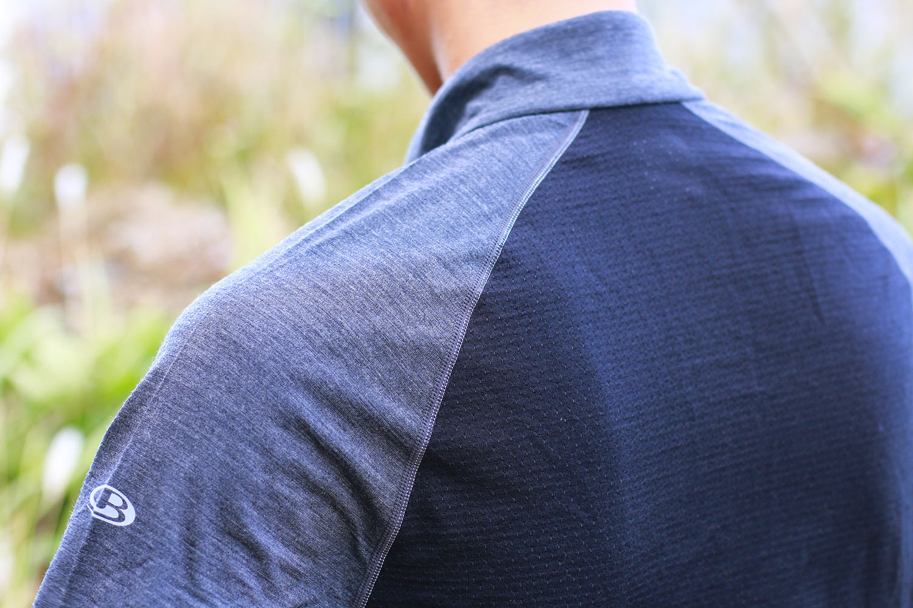
▲ 插肩袖設計與上背部大面積透氣網眼
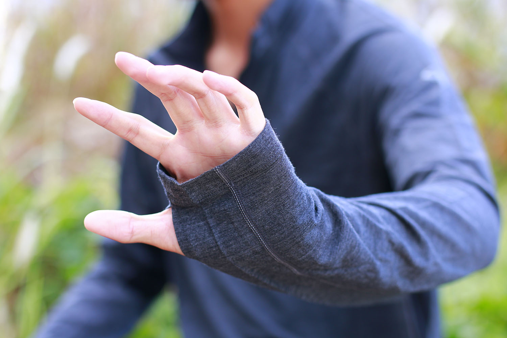
▲ 袖口拇指扣設計提升固定性與保暖性
實際穿著方面，icebreaker 底層衣確實帶來相當好的溫控效果，特別是透氣網孔的部位感覺特別乾爽舒適。觸感的部份非常柔軟貼身，比起一般的羊毛衣更加輕量且舒適，雖然剛穿上的時候會有一點點癢的感覺，但運動的過程中是完全自在的。
icebreaker 登山襪
icebreaker 長中筒厚毛圈登山健走襪是一款遠征型的登山襪，是為了非常寒冷的冬季登山健行所設計，它使用 80% 美麗諾羊毛、19% 尼龍以及 1% 萊卡彈性纖維製成，並且採用密集墊層的設計，可以最大程度地提供保暖和舒適性。下圖展示了 icebreaker 登山襪的八大特色：
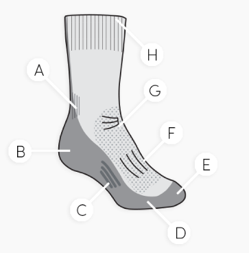
● A - 阿基里斯腱防護結構
● B - 腳跟和腳趾部位耐用度強化
● C - 增進足弓的支撐性與穩定性
● D - 雙倍羊毛緩衝墊提升舒適度
● E - 平織襪頭避免起水泡
● F - 呼吸區改善透氣性
● G - 特殊功能結消除褶皺體積
● H - 舒適寬襪口設計
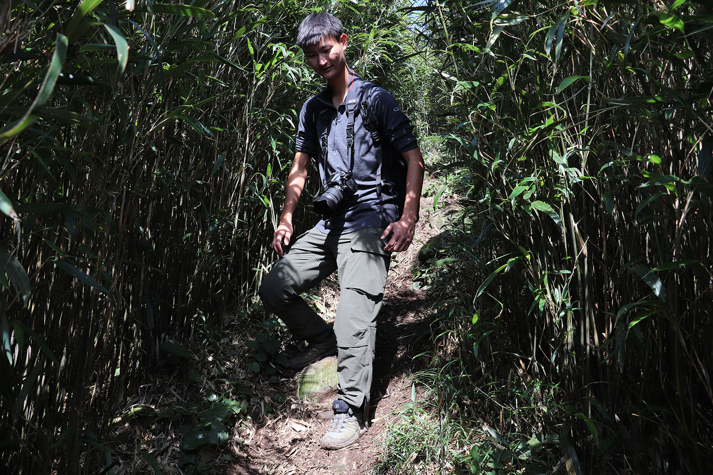
▲ 兩旁比人高的濃密箭竹林在太陽的照射下好似大蒸籠（圖片來源：Sean）
icebreaker 底層衣能夠讓身體保持乾爽的秘訣，第一是透氣網孔的設計，讓腋下部位以及背部的空氣能夠對流，藉此蒸散排汗所產生的水氣，這兩個部位也是平常爬山時最容易因為流汗而濕透的地方。第二則是因為美麗諾羊毛具有強大的吸水能力，它能夠從皮膚表面吸收自身重量 30% 的水分，外部相對乾燥的空氣就能夠再從衣物表面再帶走這些水分。這樣的概念就類似土壤能夠涵養水源，當下大雨（爆汗）的時候能夠吸收水分避免洪災（皮膚濕透），並且在乾燥的時候將這些水排放（蒸散）出去。icebreaker 底層衣可以說是汗水的蓄洪池呢。
或許有人會好奇，穿短袖的話汗水不是能夠乾得更快嗎？答案當然是肯定的，不過在春秋之際，或是海拔較高的地方，氣溫不高，日夜溫差也比較大的時候，穿短袖的後果可能會造成汗水蒸散速率過高，體表溫度下降過快，反而容易造成感冒。而且當我們停止運動之後，身體的核心溫度很快會下降，此時便需要保暖措施，長袖的衣物才能夠提供足夠的保暖功能。
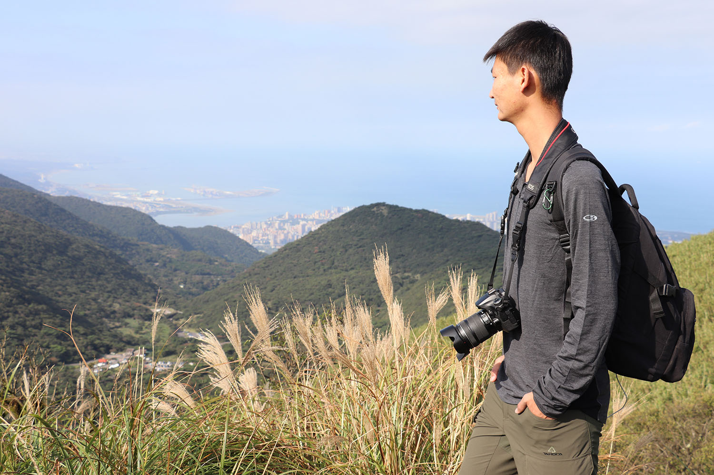
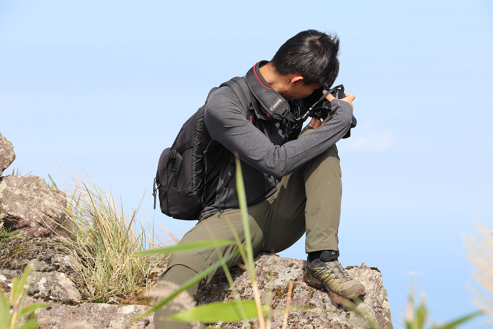
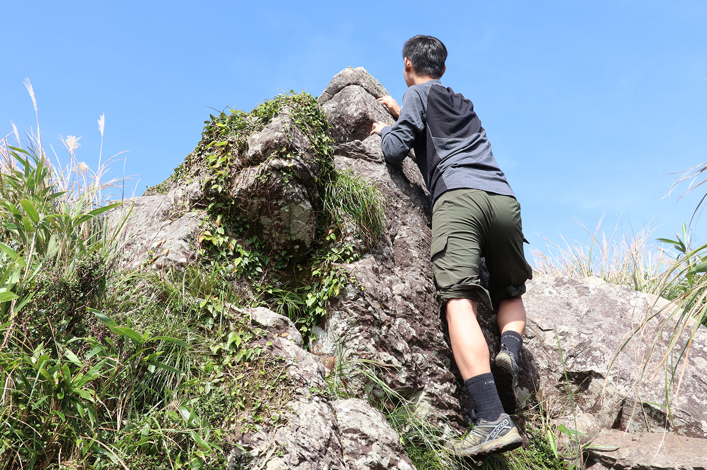
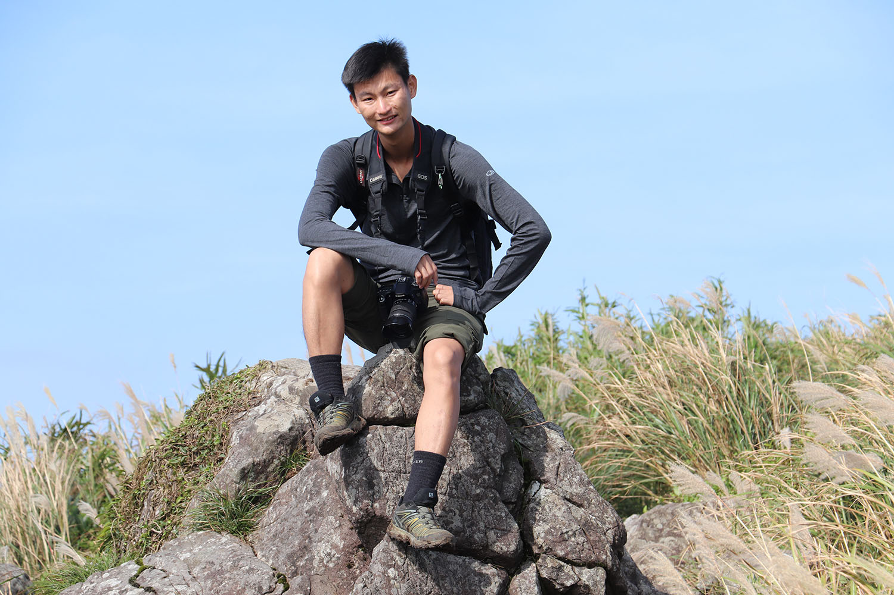
▲ icebreaker 底層衣適合秋天上山賞芒花（圖片來源：Sean）
從登山口到西西峰一路都是好走的稜線，然而到西西峰之後，接下來要面對的就是今天的大魔王，也就是從非常陡的泥土坡下切到大屯溪谷，然後再重新爬回另一端通往北峰的稜線。這段路雖然不長，不過由於前陣子連日下雨的緣故，山坡仍然泥濘且溼滑無比，下山的過程中必須不斷以前腳掌施力止滑。走這段路不但考驗腳力和鞋子，也是考驗襪子的舒適度以及調節濕氣的能力，icebreaker 登山襪的厚底有效消除以往長下坡時前腳掌所產生的不適感，同時能讓腳掌不會因為流汗而濕黏，避免了因為摩擦而起水泡的風險。
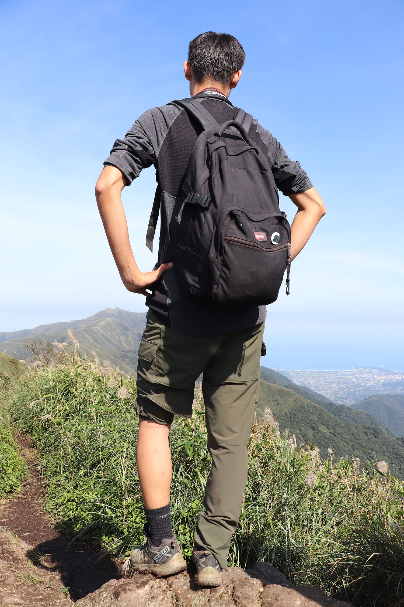
▲ 小觀音山北峰是眺望竹子山和北海岸的絕佳地點（圖片來源：Sean）
奇萊南峰、南華山健行
奇萊南峰和南華山路線在高山百岳中算是相當入門也相當熱門的路線，從屯原登山口到天池山莊這段能高越嶺道平緩寬敞，若不是距離稍長了些（13 公里），其實路況比許多郊山還要明朗好走。不過，畢竟是海拔近三千公尺的中高海拔山區，當天氣狀況不好的時候，難度也是不容小覷的。
時隔一年多，這次再訪奇萊南華正好遇上東北季風來襲，鋒面經過讓山上山下都下了整整兩天的大雨，直到第三天下山的路上才遇見大好天氣。事後我們聽接駁的司機大哥說，上山那天他告別我們從登山口回到平地的路上，就聽見新聞說中北部山區降下今年第一場瑞雪。
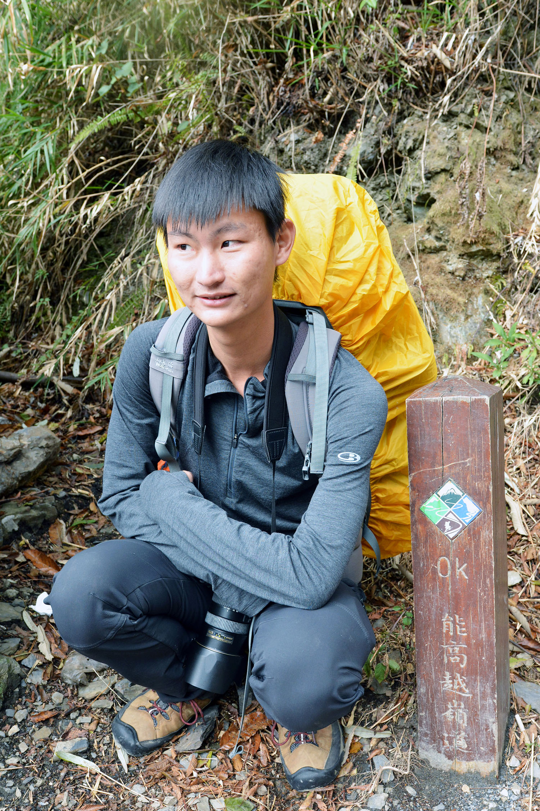
▲ 從屯原登山口出發時精神抖擻的樣子（圖片來源：Alan）
不過我們到屯原登山口時天氣還算是相當好的，甚至出了點小太陽，雖然氣溫只有攝氏 12 度，不過高山上的太陽總能讓人感到暖呼呼。從登山口開始，我便只穿著 icebreaker 底層衣。事實上，打清晨從家裡出門開始，一路到後來在雲海保線所時因為下雨而穿上化纖外套前，我的裝扮都沒變過。如果結合小觀音山當天的經驗，icebreaker 底層衣單穿至少可以應付攝氏 10 度到 28 度的氣溫範圍，熱時不會因為流汗而濕透，冷時也能夠維持皮膚與核心溫度，體溫調控的機能相當出色。後來直到天池山莊前，我都只穿 icebreaker 底層衣和一件化纖外套。
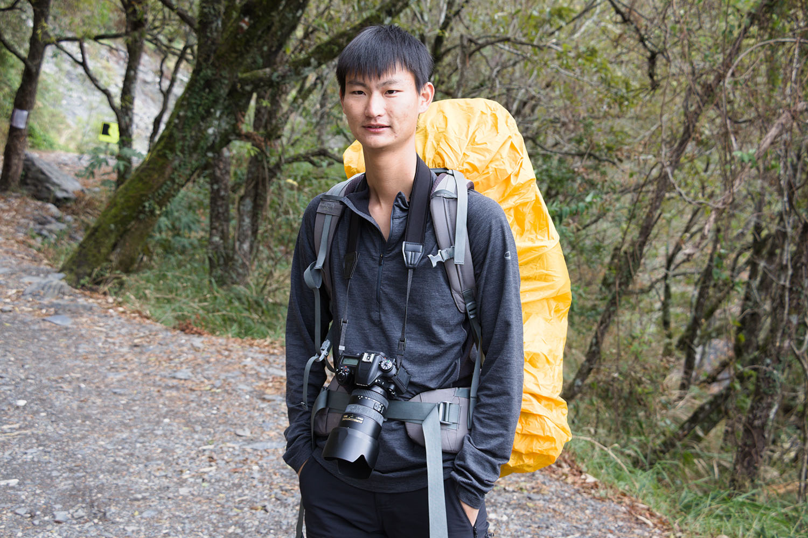
▲ 能高越嶺道一景（圖片來源：Sean）
因為持續淋雨好幾個小時，化纖外套抵擋不住源源不絕的雨水進攻，從肩膀、腋下和上臀部等與背包不斷摩擦的部位濕了進來，連帶 icebreaker 底層衣也濕掉。抵達山莊後，我把底層衣晾起來，睡前便已乾了七、八成，無奈這兩天下雨濕度實在太高，隔天早上也未能全乾。
為了繼續測試 icebreaker 底層衣，我決定先穿另一件聚脂纖維底層衣，再將還潮潮的 icebreaker 底層衣當成中層來穿，結果意外發現它當成中層衣也相當合適，同樣能夠發揮溫度與濕氣調節的功效。當這件潮潮的 icebreaker 底層衣接收到我的身體因為運動而散發出的熱氣時，可以很明顯感受到它吸收水分開始蒸散。第二天在天池山莊出發時仍然潮濕的 icebreaker 底層衣，即便當時仍然下著雨，我仍然穿著化纖外套，當我們抵達奇萊南峰叉路口時，早已完全感受不到任何濕氣。
奇萊南峰頂的溫度是攝氏零下 1 度，雖然沒有下雪，但整個箭竹草原已經結了一層雪白的霜，我脫下外套，只靠一件底層衣和 icebreaker 底層衣面對山頂的狂風。零下低溫加上風寒效應，說不冷是騙人的，不過如果是在沒風的狀態下，這樣的溫度光穿這兩件爬山對我而言也確實是完全沒問題的。
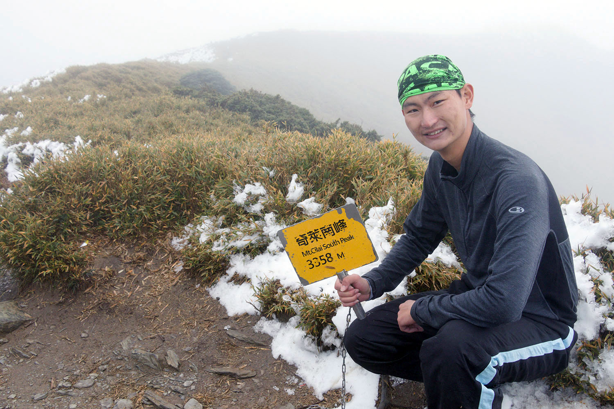
▲ 說不冷是騙人的結冰奇萊南峰頂（圖片來源：Sean）
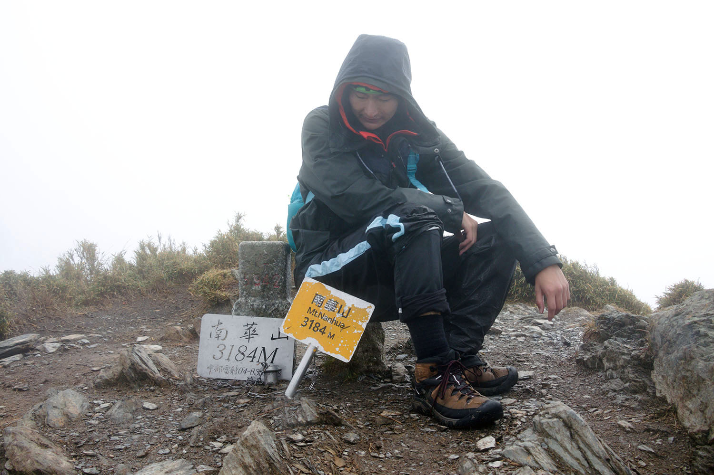
▲ 南華山頂風真的太狂太冷這次不脫外套了（圖片來源：Sean）
攻頂這天雨備做得好，淋一整天雨走完奇萊南峰和南華山後，外套裡頭兩件衣服都沒有濕，這次倒是換鞋子撐不住了。
其實前一天鞋子就有濕掉，但當時穿的 icebreaker 登山襪只有腳趾尖的部位有濕掉，只不過穿了一整個晚上，到睡前也都乾得差不多了。早上出門時，我發現我的鞋子裡頭竟然是濕的，後來才發現原來是因為鞋子放在椅子下，而許多山友又把濕透的雨衣和用品放在椅子上，導致水滴從椅板縫隙滴到鞋子。本來已經抱持著一整天腳都要不舒服的心理準備，沒想到因為 icebreaker 登山襪厚度以及吸水能力的關係，讓我的腳維持乾燥直到登頂奇萊南峰又回來到天池。
從天池往南華山的路上，襪子終於濕到無法再吸收水分，幸好最後這段路也沒什麼挑戰的地方。
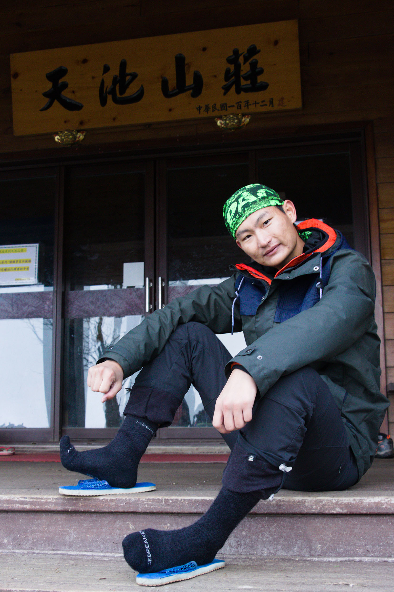
▲ 完成登頂奇萊南峰與南華山回到天池山莊（圖片來源：Sean）
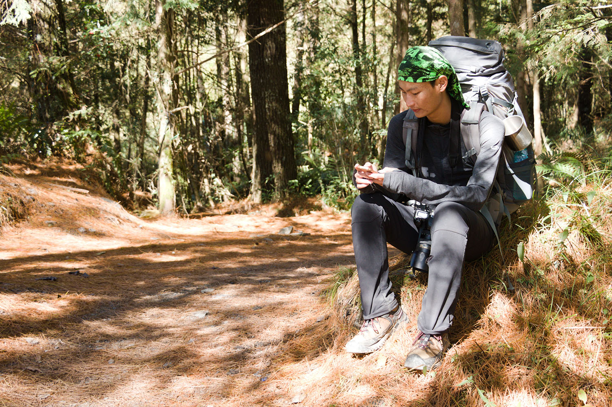
▲ 下山時天氣大好、鋪滿松針的能高越嶺道（圖片來源：Sean）
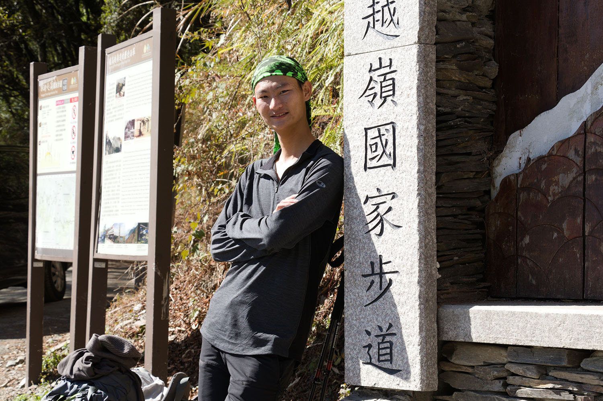
▲ 成功存活回到屯原登山口（圖片來源：Sean）
【結語】
從海拔 1000 公尺的郊山健行，到海拔 3000 公尺的高山攀登，icebreaker 底層衣和登山襪都能夠適當地調節體溫，也能夠提供足夠的保護。而雖然以上並沒有特別強調 icebreaker 底層衣的防護性，但這兩趟行程有一個共同點，就是都有不少路段佈滿比人還高的茂密箭竹。在 icebreaker 底層衣的保護下，雖不至「如入無竹之境」，卻也能行得舒適自在。
另外是 icebreaker 美麗諾羊毛的抗臭能力真的不是蓋的，就連穿到濕掉還悶在鞋子裡幾個小時的厚襪子都絲毫沒有發臭。還記得兩個月前縱走樟之細路時，到最後一天回家時，我的排汗衫全都臭上天際，自從開始穿 icebreaker 美麗諾羊毛產品之後，每次回家我都會很懷疑自己到底有沒有把乾淨的衣服和穿過的混在一起。早前看到一篇評測，對某他牌美麗諾羊毛衣進行接近登山一個月不洗滌測試，美麗諾羊毛產品除臭的威能真是令人大開眼界。
又來到神聖的星星時間
ZONE 網眼透氣保暖半開襟長袖上衣（BF200）
● 保暖控溫：★★★★☆
● 透氣排汗：★★★★★
● 抑菌防臭：★★★★☆
● 抗刮耐磨：★★★★☆
● 舒適靈活：★★★★☆
● 做工品質：★★★★★
單穿底層衣能夠應付攝氏 10 度到 28 度的氣溫環境，icebreaker 底層衣的溫度調節和保暖能力真的沒話說。在爆汗的蒸籠路段仍然能夠保持身體乾燥，這要歸功於美麗諾羊毛吸濕的特質，而利用透氣網孔來對重點部位增強通風，則是 icebreaker 底層衣的一項創舉。不過如果到了高海拔地區，特別是夜間或清晨，磅數 200 難免顯得稍有不足，除了挑選磅數更高的衣款之外，把它當成中層衣來穿也是不錯的選擇。
此外，美麗諾羊毛能夠抑菌防臭是有目共睹的，穿三天不會臭已經成為山友們的基本常識，icebreaker 底層衣也不例外。雖然它不會臭，但它不能阻隔身體本身散發出來的臭，這不是衣物本身的問題，但卻是小小美中不足的地方。
icebreaker 底層衣的做工品質極佳，車縫線和拷克都非常細緻，拉鍊在操作時也相當順暢。拇指扣扎實穩固，既舒適又耐用。然而，以美麗諾羊毛產品來說，icebreaker 底層衣的觸感稍微偏硬，特別是初次穿著時會有些微癢感。不過，這些不適感在穿上衣服之後很快就會消失，隨之而來的是貼身且不失靈活的體驗。不同面料的接縫處採用平織法減少摩擦，大大增加了穿著時的舒適感。
雖然底層衣天生便不是設計來抗刮耐磨的，不過 icebreaker 底層衣帶來的保護效果確實還不賴，面對茂密的建築戳戳刺刺的時候，他可以保護皮膚不受傷，也不會被勾破或脫線，可說是超乎預期的表現。
長中筒厚毛圈登山健走襪
● 保暖控溫：★★★★★
● 透氣排汗：★★★★★
● 包覆貼合：★★★★★
● 運動防護：★★★★☆
● 抑菌防臭：★★★★★
● 抗磨耐操：★★★★☆
號稱為了到極寒地區長途健行而生的 icebreaker 登山襪，在保暖方面是極致的存在，即使穿著一般的健行鞋踩在冰霜裡也絲毫不會感到寒冷，然而這樣一款高度保暖的襪子卻也可以在二十度的郊山行程中穿著而不會覺得悶熱，溫度的調節以及透氣排汗的機能令人歎為觀止。
柔軟的美麗諾羊毛就像棉花糖一樣軟綿綿地把整隻腳掌包覆得服服貼貼，長中筒的款式連小腿也能受到溫柔的關懷與照顧。icebreaker 登山襪雖然厚，卻不會因為其厚度而踩起來不穩定，行進的過程中，襪子和腳之間不會位移或摩擦，貼合性相當完美。
一般對於防護機制的印象都是緊實而有張力的，但是 icebreaker 登山襪真的很厚很綿，讓人很難將它和運動防護聯想在一塊，但它確實為足弓、腳踝和阿基里斯腱提供支持和舒緩。身為一個扁平足人，前陣子又不慎扭傷腳踝尚未康復，行走小觀音險峻路段和 15 公斤重裝健行奇萊南華的過程全無不適，甚至不曾感到疲勞，防護能力可見一斑。
雖然沒有安排穿一個月爬山不洗衣服，但這次體驗 icebreaker 產品將近一個月的時間裡，我還真的沒洗過襪子。至於為什麼不洗呢？呃，就沒臭呀⋯⋯！然後我發現從奇萊南華回來後襪子還是沒臭，別忘了它可是曾經因為下雨濕透悶在鞋子裡一天呀。
後話
其實底層衣應該是要挑選貼身一點的大小，這次我選擇穿大一號，難免讓其功能產生一點折扣。不過也因為選擇大一號的關係，我可以把它當成中層衣穿，這也是這一件 icebreaker 底層衣特別的地方。它是一件底層和中層兩用的衣服，讓我們在規劃攜帶衣物時，可以再減輕一件衣服的重量，真是一兼二顧。
本文同步發表於健行筆記： ● 【體驗】Icebreaker 底層衣與登山襪山野初體驗 更多故事請關注宇宙浪人工作室。 更多相片請參見相簿：小觀音山、奇萊南華。 本文由墾趣贊助推出。